Welcome to the 2018 Page!
In 2018, the Boston Crusaders Performed the Show "S.O.S.", loosely based on the William Golding novel Lord of The Flies. The show follows the story of a group of travelers stranded on an island, forming alliances, dealing with conflict, and eventually being found. Over the course of the season, the Corps climbed all the way to 5th place overall at DCI finals, with a score of 94.3125. The corps also received the George Zingali award for best colorguard.
Season Gallery (Temporary Layout)
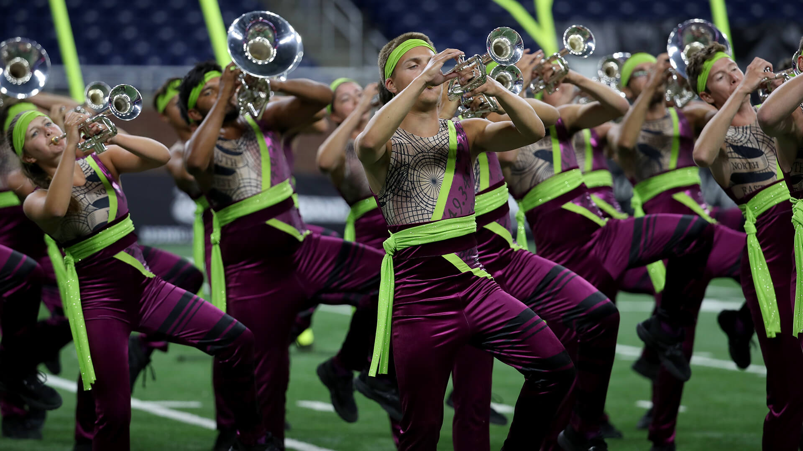
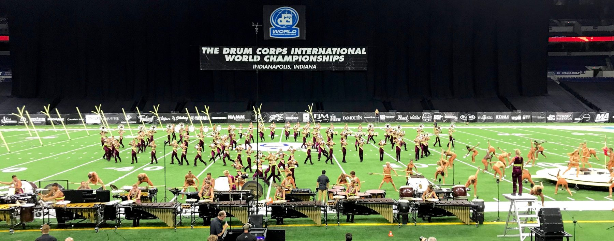
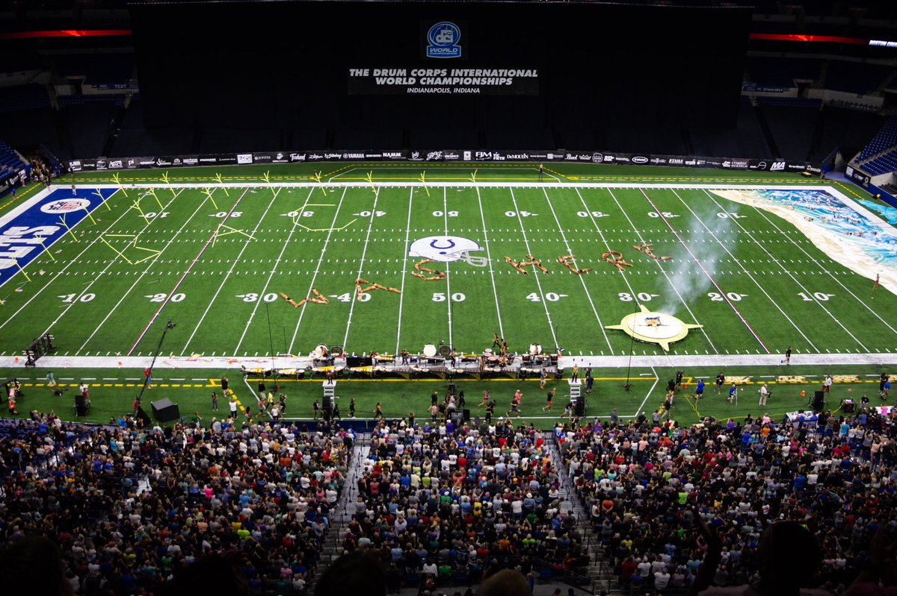
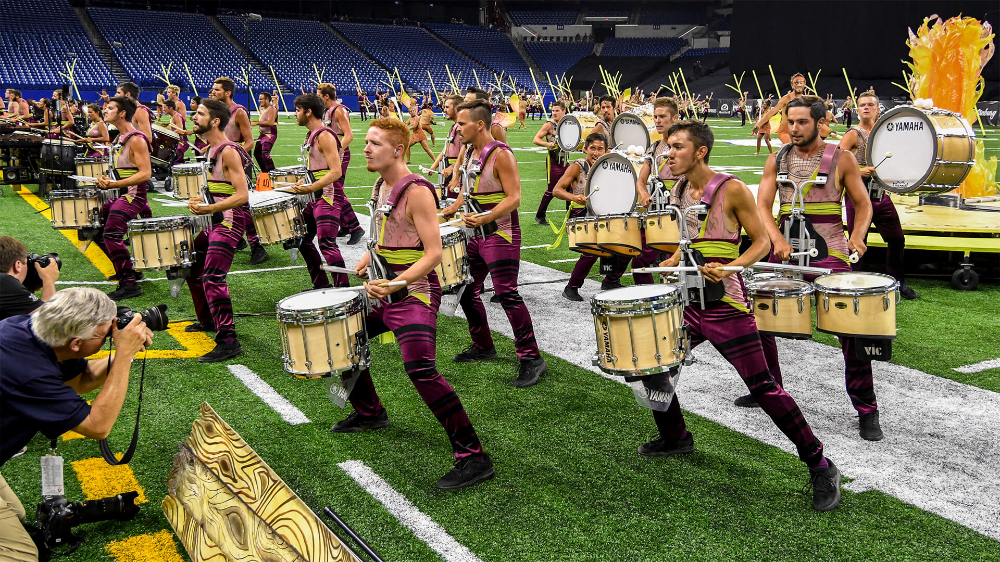
 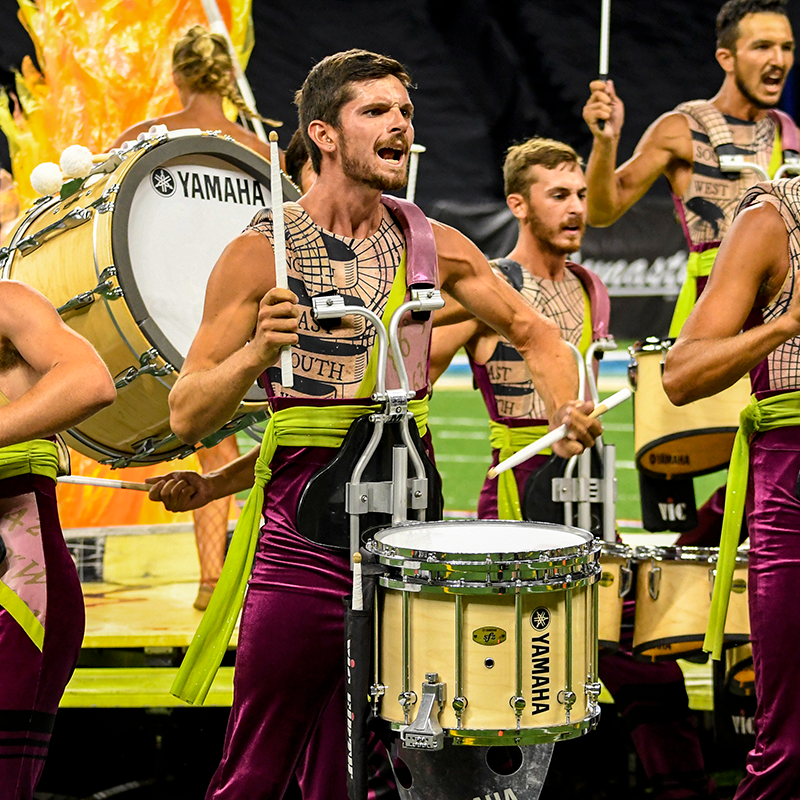
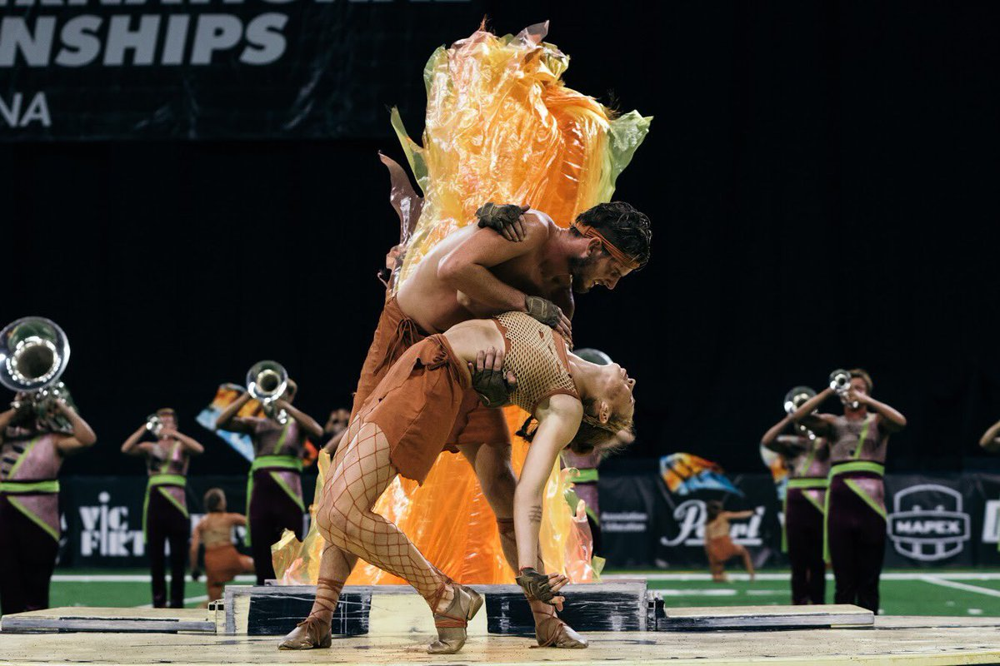
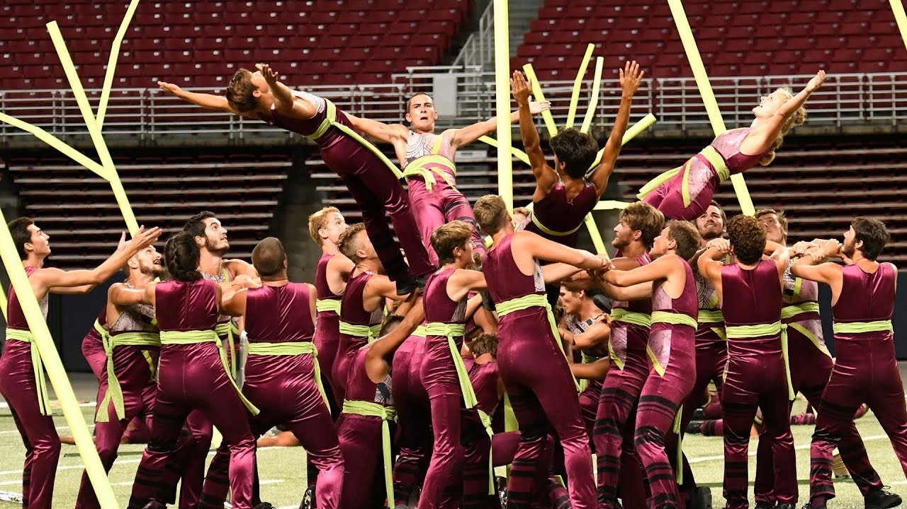
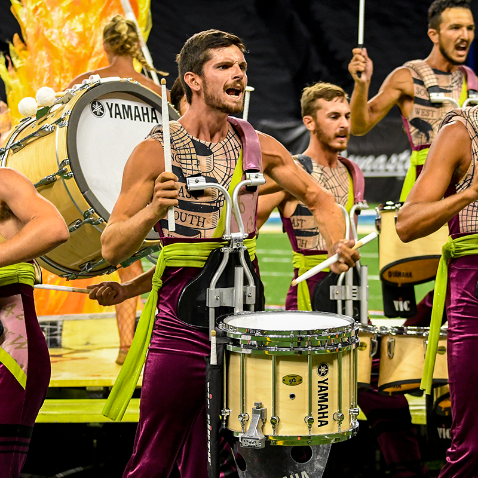
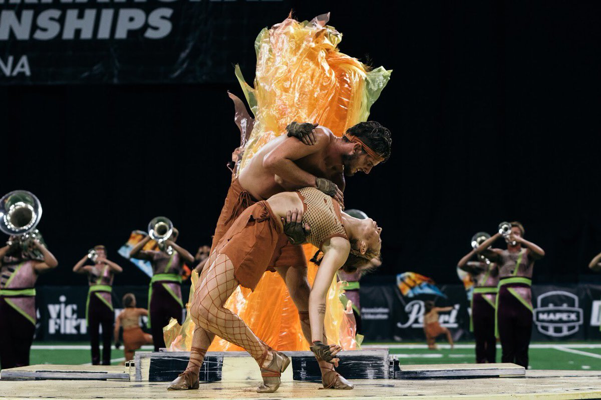
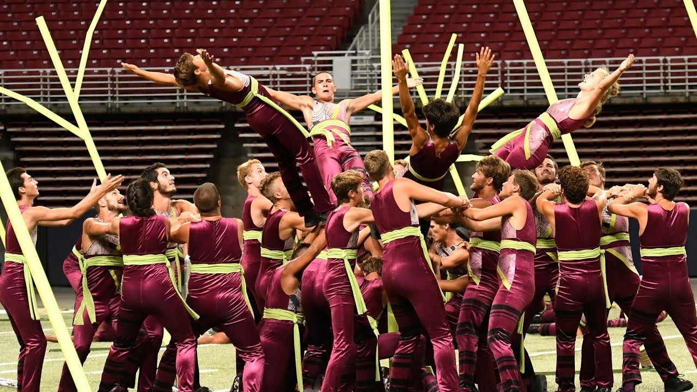
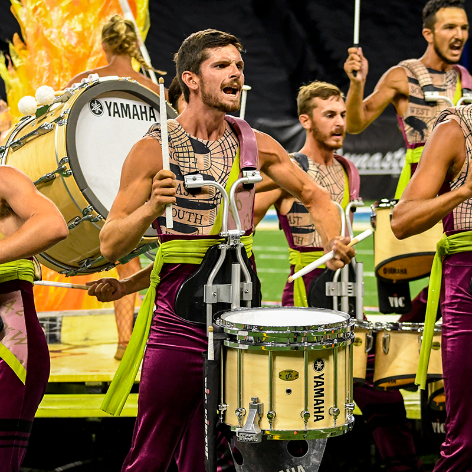
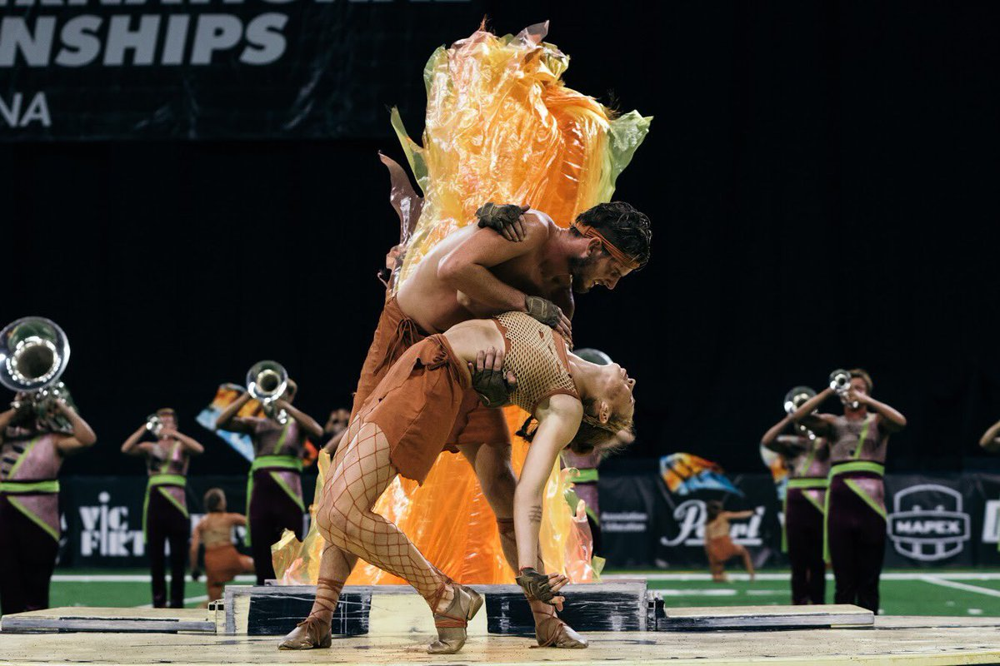
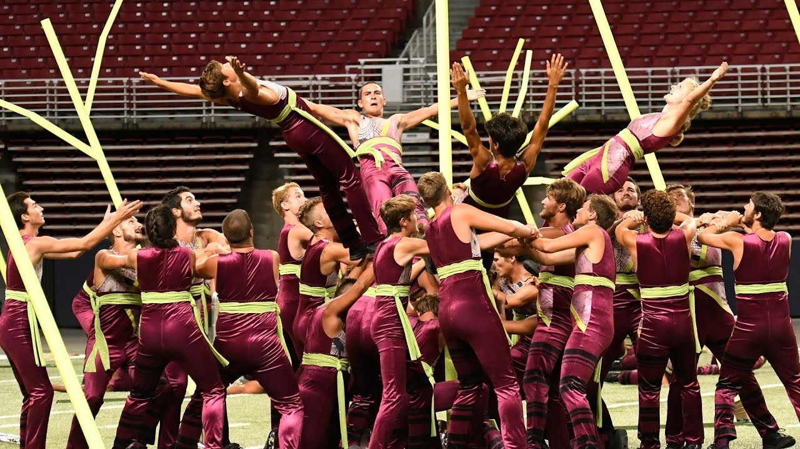